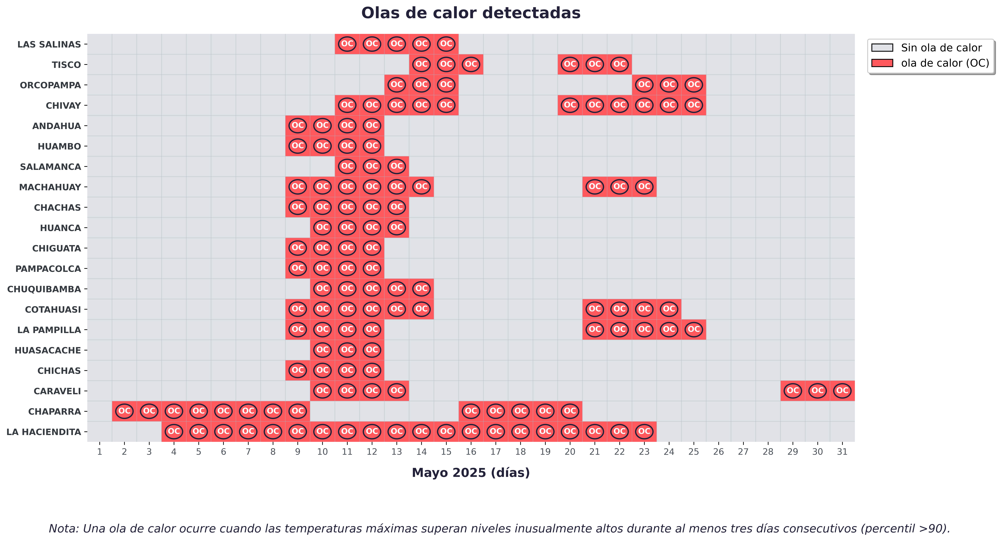

REPORTE METEOROLÓGICO
Durante mayo de 2025, la Región Arequipa presentó un comportamiento térmico anómalo, caracterizado por fuertes contrastes diarios, tanto en temperaturas máximas como mínimas. Se registraron valores extremos en varias zonas, así como múltiples episodios de olas de calor que afectaron a varios sectores. La clasificación térmica diaria muestra una alta frecuencia de días y noches fuera del rango climatológico normal, con implicancias directas para la gestión del riesgo, la agricultura, la salud y la planificación territorial. Los siguientes gráficos permiten visualizar de forma integrada la intensidad, duración y distribución de estos eventos térmicos en todo el territorio regional.
Temperatura Máxima
La Región Arequipa mostró una gran variación en las temperaturas máximas. En promedio, estas oscilaron entre 10.0 °C y 30.0 °C. Se identifica una zona central con temperaturas más bajas que el resto, rodeada por áreas con temperaturas más altas. Esta distribución refleja diferencias marcadas en el comportamiento térmico durante el mes, lo que puede influir en la agricultura, el consumo de agua y la salud.
Temperatura Mínima
La Región Arequipa presentó temperaturas mínimas con un rango amplio, desde valores inferiores a -9 °C hasta cerca de 18 °C. Se destacan zonas con condiciones de frío intenso en el sector noreste, mientras que las temperaturas más altas se concentraron hacia el suroeste. Este comportamiento es clave para la evaluación de riesgo por heladas.
Clasificación de Temperatura Máxima
La clasificación por percentiles muestra múltiples eventos de días muy cálidos y extremadamente cálidos, especialmente entre el 8 y el 15 de mayo. También se reportaron días fríos aunque en menor cantidad. Esto evidencia contrastes térmicos importantes a lo largo del mes.
Clasificación de Temperatura Mínima
Se observa una alta frecuencia de noches frías en la segunda mitad de mayo. En cambio, los primeros días del mes presentan algunas noches cálidas. Esta información es fundamental para el seguimiento de eventos de frío y su impacto en la agricultura.
Olas de Calor
Durante mayo se registraron varios episodios de olas de calor. Estos eventos fueron particularmente persistentes entre el 6 y el 14, y luego nuevamente entre el 16 y el 24. Las condiciones atmosféricas favorecieron la acumulación de calor, aumentando el riesgo en salud, agricultura e incendios forestales.
